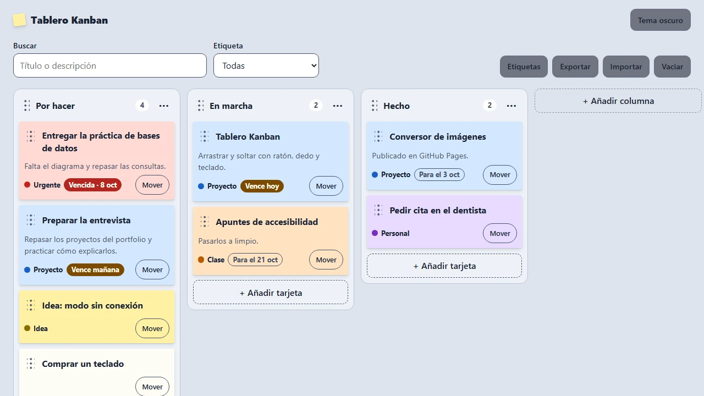

Tablero Kanban
Un tablero Kanban con columnas y tarjetas que se mueven arrastrando con el ratón, con el dedo o con el teclado. No tiene servidor: el tablero se guarda en el navegador.

Qué hace
- Columnas y tarjetas que se añaden, editan, mueven y borran.
- Arrastrar y soltar tarjetas y columnas, con ratón y en el móvil.
- Teclado: Alt + flechas mueve la tarjeta que tiene el foco, y cada tarjeta tiene un botón «Mover».
- Etiquetas de color con nombre y fecha límite, con aviso cuando una tarjeta vence.
- Buscador, filtro por etiqueta y exportar e importar el tablero en JSON.
Cómo funciona
El arrastre está hecho a mano con Pointer Events, que valen igual para ratón y dedo. Al coger una tarjeta dejo un hueco en su sitio, la tarjeta sigue al puntero y el hueco se va colocando donde caería.
Al soltar se cambian los datos y se repinta el tablero. Para que no pegue un salto, apunto dónde estaba cada tarjeta antes de repintar y la animo hasta su sitio nuevo. Si el sistema pide reducir el movimiento, no se anima.
Está hecho con HTML, CSS y JavaScript sin frameworks ni librerías. Los datos del tablero, el arrastre y lo que se ve en pantalla van en archivos separados.
Lo que aprendí
- Hacer arrastrar y soltar a mano, y por qué la opción que trae el navegador no funciona bien en móviles.
- Que lo que se hace con el ratón tiene que poder hacerse también con el teclado.
- Animar elementos que cambian de sitio cuando se vuelve a pintar la página.
Domótica